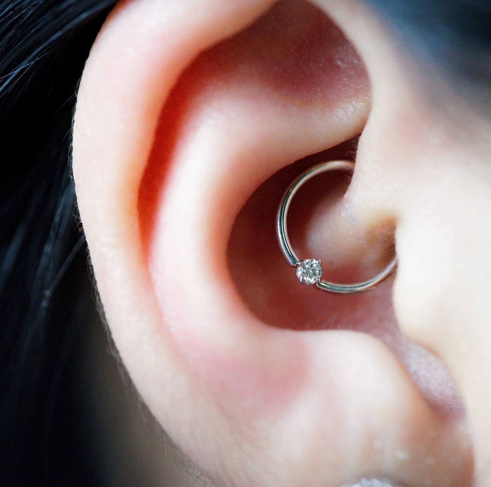

Bevor wir stechen, beraten wir Dich ausführlich über Materialien, Pflege und Risiken. Wir arbeiten nach höchsten Gesundheits- und Hygiene-Standards — ein schnelles Piercing zwischen Tür und Angel bekommst Du bei uns daher nicht. Zum Ersteinsatz kommt ausschließlich Titan zum Einsatz, um allergische Reaktionen auszuschließen.
Lass Dir bei uns Dein ganz individuelles Piercing stechen.
Für die Kleinsten das Beste — das erste Piercing zum kleinen Preis. *bis 8 Jahre.
Septumringe gehören heute zu den beliebtesten Piercingschmuck-Arten.
Eines der besondersten Ohrpiercings, das Du tragen kannst.
Transdermales Implantat aus kleiner Titanplatte und aufgeschraubtem Aufsatz.
Wie der Name sagt — ein Piercing im Intimbereich ist etwas ganz Persönliches.
Am häufigsten werden nach wie vor Piercings am Ohr durchgeführt — sehr vielfältig, mit unterschiedlichsten Möglichkeiten. Die gängigsten Formen und Verheilzeiten:
Sehr beliebt. Labret-Stecker, Ringe oder Steine möglich. Verheilt beim Punchen nach max. ca. 5 Wochen.
Ring, Stecker oder Labrets. Verheilzeit beim Punchen ca. 2–5 Wochen.
Meist mit Piercing-Ring. Verheilzeit zwischen 4 und 16 Wochen.
In der Regel ein Piercing-Stab. Verheilzeit 12–26 Wochen, beim Punchen ca. 2–5 Wochen.
Meist Ring, auch Stäbe möglich. Verheilzeit 8–20 Wochen, beim Punchen max. ca. 4 Wochen.
Ring oder Piercing-Banane. Verheilzeit hängt von Stelle und Schmuck ab.
Oft Flesh-Tunnel. Verheilzeit beim Punchen meist max. 5 Wochen.
Häufig Bananen, auch Ringe. Verheilzeit beim Punchen 2–5 Wochen.
Das Daith-Piercing gegen Migräne beruht auf dem Prinzip der Akupunktur: An der korrekten Stelle am Ohr — auf der knorpeligen Falte über dem Gehöreingang — gesetzt, soll es die Migränehäufigkeit spürbar reduzieren. Je nach Schmerzlokalisation können zwei Piercings zum Einsatz kommen, an jedem Ohr eines.
Damit Dein Piercing schön und korrekt abheilt, beachte unsere Pflegetipps.
Make-up, Parfüm, Haarspray und fremde Körperflüssigkeiten dürfen während der Heilung nicht mit dem Piercing in Kontakt kommen. Die ersten 24 h kein Alkohol (Schwellung). Keine Sauna, Solarium oder Chlorwasser bis zur Abheilung. Verkrustungen nie abkratzen. Nicht ständig bewegen oder daran spielen. Schmuck erst nach vollständiger Abheilung wechseln.
Heilungszeit 1–5 Wochen. 2× täglich mit sterilem Mittel reinigen, nur mit sauberen Händen berühren.
Heilungszeit 3–5 Wochen. Auf Mundhygiene achten, scharfe und heiße Speisen anfangs meiden.
Heilungszeit 2–6 Wochen. Beim Duschen gründlich waschen, 2× täglich desinfizieren (z. B. «Pruri-med», ohne Konservierungsmittel). Geschlechtsverkehr nur geschützt; bei Schmerzen vorsichtig sein oder verzichten.
Heilungszeit 6–8 Wochen. Vor Stößen und Zug schützen, sauber halten, nicht daran ziehen.
Einfache Einstiche verheilen oft innerhalb von zwei Wochen. Je nach Stelle, Piercing und Stechart kann es aber auch bis zu 20 oder mehr Wochen dauern.
Manche reagieren auf Metalle wie Nickel. Deshalb verwenden wir als Ersteinsatz ausschließlich Titan — hier kann es nicht zu allergischen Reaktionen kommen.
Das hängt von Deinem Schmerzempfinden und der Körperstelle ab. Örtliche Betäubung versuchen wir zu vermeiden, da auch sie Risiken birgt.
Nur bei mangelnder Hygiene. Wir arbeiten streng nach den Richtlinien des Gesundheitsamts — und übertreffen sie in vielen Punkten. Titan minimiert zusätzlich das Allergierisiko.
Ab 14 Jahren. Bis 16 muss ein Erziehungsberechtigter (mit Ausweis) dabei sein, ab 16 reicht eine unterzeichnete Einverständniserklärung, ab 18 kommst Du einfach selbst vorbei.